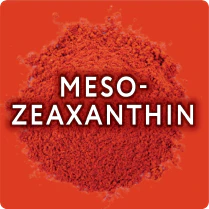
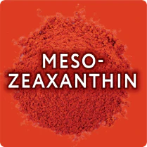

Vitamins For Your Eyes
Your eyes need proper nutrition, just like the rest of your body. But most of us do not get enough nutrients from our diet alone.
Let eyetamins® help! Take our quiz to find the right science-backed, natural formula to support your vision and eye health today.


 
